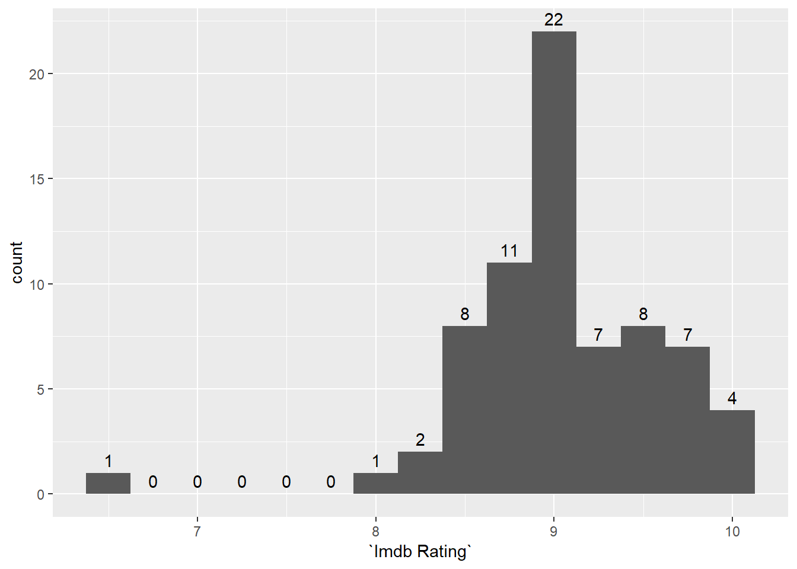
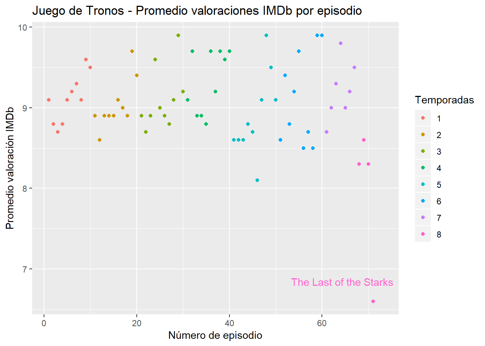
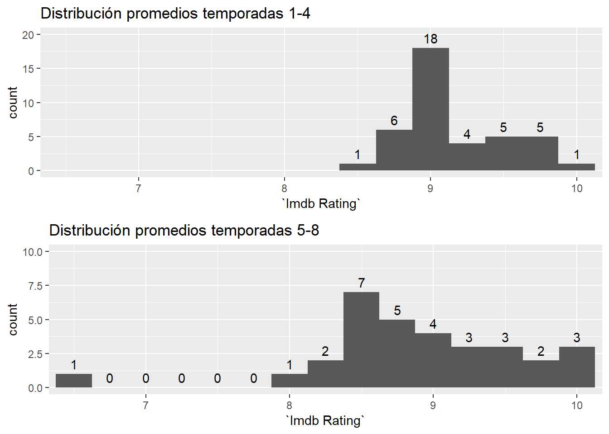
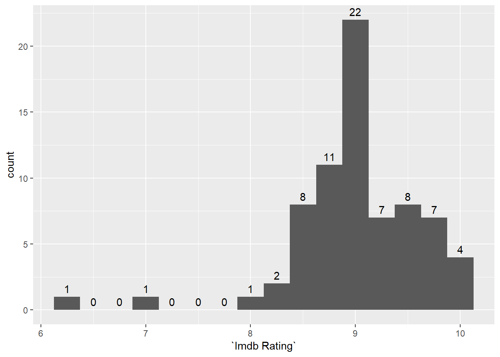
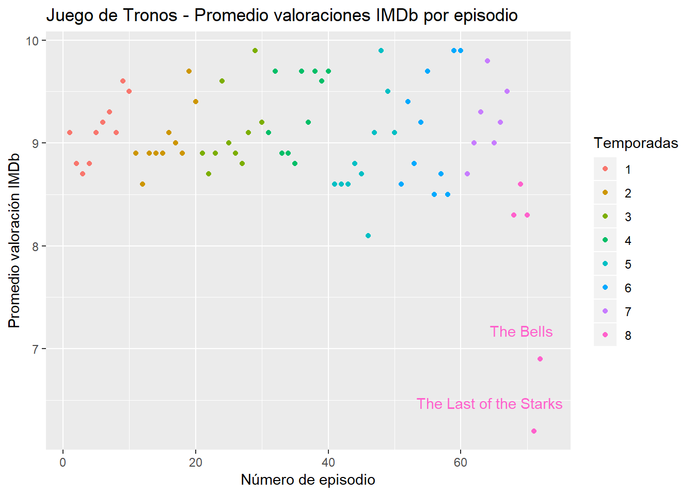
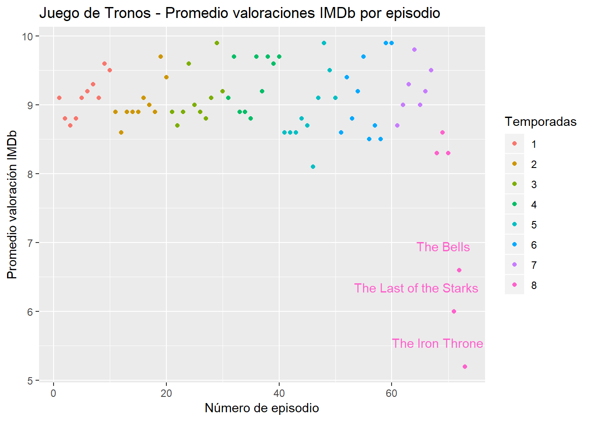
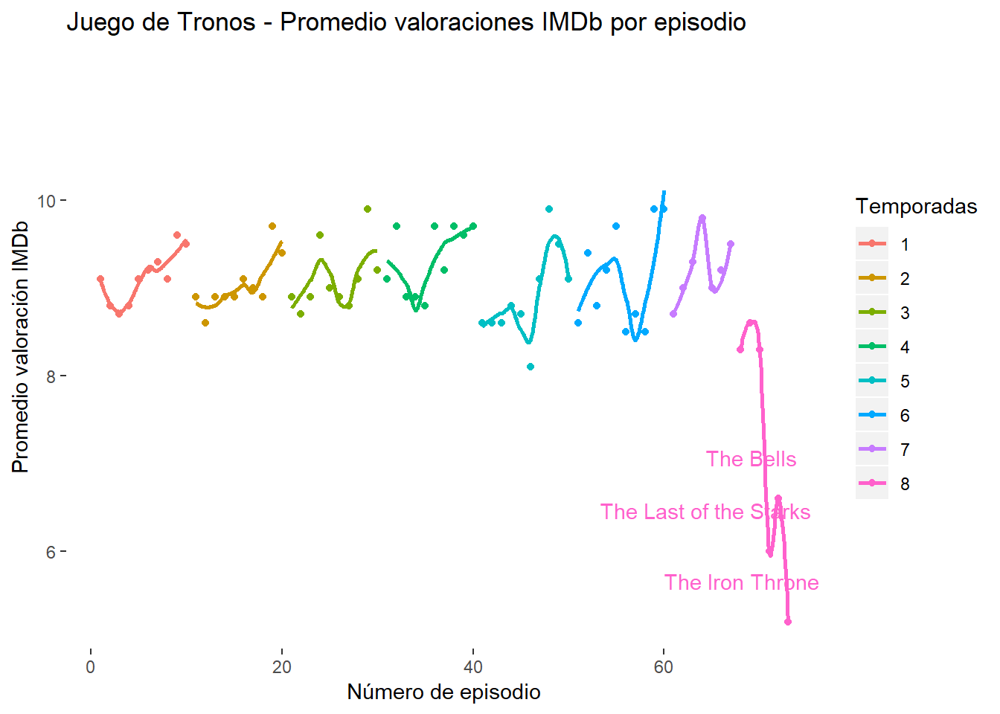

1 Valoraciones imdb.com
1.1 8x04. “The Last of Starks”.
Nota importante: El siguiente análisis está hecho con los datos actualizados el 09-05-2019. En el apartado siguiente 8x05. “The Bells” además de incluir la nota del quinto capítulo de la temporada se actualiza el promedio del 8x04, que del 6,6 que tenía hace unos días baja hasta un promedio de 6,2.
En esta parte vamos a echar un vistazo a las valoraciones de los capítulos de Juego de Tronos de los usuarios de imdb.com, centrándonos principalmente en el último capítulo emitido 8x04 “The last of the Starks”, que ha batido con muchísimo las peores valoraciones hasta ahora recibidas por un episodio de Juego de Tronos.
Las valoraciones de los tres primeros capítulos de la temporada 8 (8,3, 8,6 y 8,3) ya estaban por debajo del promedio histórico de la serie, pero es que la valoración del cuarto episodio ahora mismo es de 6,6 (con más de 60.000 valoraciones), un auténtico batacazo para esta serie y para HBO. La peor nota hasta ahora la poseía el episodio 5x06 “Unbowed, Unbent, Unbroken”, con un 8,1 de promedio. Nada menos que 1,5 puntos de diferencia.
Así que lo que vamos a hacer es simplemente visualizar en distintos gráficos lo lejos que está la puntuación de este capítulo del resto de episodios de Juego de Tronos.
Cargamos primero los paquetes necesarios para el análisis. Opto esta vez por cargar directamente la librería tidyverse y su universo de paquetes. Y añado la librería “gridExtra”.
library(tidyverse)
library(gridExtra)Los datos los he descargado de este proyecto de Kaggle. Muchas gracias, dasbootstrapping por publicar este dataset.
Lo único que he hecho ha sido revisar los valores de los promedios que estaban ya en la tabla (algunos promedios han cambiado mínimamente) e incluir las valoraciones de los 4 primeros capítulos de la temporada 8 con sus correspondientes valoraciones. La fecha de obtención de estos datos de imdb.com es el 2019-05-09.
Importamos la tabla:
original_dataset <- read_csv('data/got_csv_ratings_updated_2019-05-09.csv', locale = locale(encoding = "ISO-8859-1"))Nos quedamos únicamente con los campos que vamos a utilizar:
got_ratings <- original_dataset %>% select(Season,
"Episode Number",
"Episode Name",
"Imdb Rating")Obtenemos un resumen con varios estadísticos con la función “summary”. El 75% de los episodios tienen una valoración promedio por encima del 8,8. Casi nada. Y un 25% obtuvieron una valoración mayor que 9,4.
summary(got_ratings$`Imdb Rating`)## Min. 1st Qu. Median Mean 3rd Qu. Max. NA's
## 6.600 8.800 9.000 9.046 9.400 9.900 2Echamos un vistazo a la distribución de las valoraciones con un histograma.
ggplot(got_ratings, aes(x = `Imdb Rating`)) +
geom_histogram(binwidth = 0.25) +
stat_bin(binwidth= 0.25, geom="text", aes(label=..count..), vjust = -0.5) El “hueco” entre la valoración más baja que existía hasta ahora y la del episodio 8x04 “The Last of the Starks” es tremendo, 1,5 puntos.
Lo vemos también con todas las valoraciones representadas en un nube de puntos.
ggplot(got_ratings, aes(x = `Episode Number`, y = `Imdb Rating`, color = as.factor(Season))) +
geom_point() +
labs(colour = "Temporadas",
x = "Número de episodio",
y = "Promedio valoración IMDb",
title = "Juego de Tronos - Promedio valoraciones IMDb por episodio") +
geom_text(aes(label=ifelse(`Imdb Rating` < 7,`Episode Name`,'')),hjust= 0.8,vjust= -2, show_guide = F)
No hay precedente, ni punto cercano, a la la valoración de este episodio. Lo que está por determinar es si los dos últimos capítulos seguirán en esta línea o recuperarán, por lo menos en parte, el favor del público. Pero es que 3 de los 4 capítulos peor valorados de toda la serie pertenecen a esta temporada. No pinta bien la cosa.
Otro detalle de la evolución de las valoraciones que se observa también a simple vista en este último gráfico es la creciente variabilidad en las valoraciones. En las últimas temporadas, excepto en ésta, sigue habiendo capítulos muy bien valorados , incluso mejor valorados que cualquier episodio de las primeras temporadas, pero también aparecen cada vez más capítulos en el entorno del 8,5, a partir del cual ya podríamos decir que es un episodio “flojito” de esta serie.
Lo vemos más claro si dividimos los datos y hacemos 2 histogramas, uno para las primeras 4 temporadas y otro para las restantes.
got_ratings_1_4 <- got_ratings %>%
filter(Season < 5)
got_ratings_5_8 <- got_ratings %>%
filter(Season > 4)
graph_1 <- ggplot(got_ratings_1_4, aes(x = `Imdb Rating`)) +
geom_histogram(binwidth = 0.25) +
stat_bin(binwidth= 0.25, geom="text", aes(label=..count..), vjust = -0.5) +
coord_cartesian(xlim = c(6.5, 10.0), ylim = c(0, 20)) +
labs(title = "Distribución promedios temporadas 1-4")
graph_2 <- ggplot(got_ratings_5_8, aes(x = `Imdb Rating`)) +
geom_histogram(binwidth = 0.25,
xlim = c(6.5, 10.0)) +
stat_bin(binwidth= 0.25, geom="text", aes(label=..count..), vjust = -0.5) +
coord_cartesian(xlim = c(6.5, 10.0), ylim = c(0, 10)) +
labs(title = "Distribución promedios temporadas 5-8")
grid.arrange(graph_1,
graph_2,
ncol = 1) 
En el segundo histograma es bastante clara la mayor dispersión de los promedios, así como el descenso de las notas más frecuentes, que en el primero se encuentran muy cerca de los nueves mientras en el segundo se produce un claro desplazamiento hacia la izquierda. ¿Está afectando a la calidad de la serie la falta de material original sobre la que apoyar sus guiones? La serie ya ha sobrepasado hace tiempo a la historia que narran los libros de George R. R. Martin. Podría ser, lo que está claro es que esta temporada final no está enamorando al público y que su último capítulo ha sido un auténtico desastre en cuanto a valoraciones de sus fans.
Querría ser más optimista. Me encanta esta serie y , aunque me gustaba más el espíritu inicial con la que nació y creció, sigo disfrutando muchísimo con ella, pero creo que esta temporada final ya es difícil de levantar.
Todo el código y los datos empleados se encuentran en este repositorio de Github https://github.com/sergioberdiales/game_of_thrones.
Cualquier consulta, queja o sugerencia me la puedes enviar vía twitter twitter.com/SergioBerdiales
1.2 8x05. “The Bells”.
Actualizamos los gráficos con las puntuaciones del capítulo 8x05 y la actualización del promedio del 8x04, que ha caíd nada más y nada menos que 4 décimas en los últimos días.
Quedan pendiente los comentarios. Esta actualización es simplemente para actualizar los gráficos.
Importamos la tabla:
original_dataset_to_8x05 <- read_csv('data/got_csv_ratings_updated_2019-05-15.csv', locale = locale(encoding = "ISO-8859-1"))
got_ratings_to_8x05 <- original_dataset_to_8x05 %>% select(Season,
"Episode Number",
"Episode Name",
"Imdb Rating")
histogram_to_8x05 <- ggplot(got_ratings_to_8x05, aes(x = `Imdb Rating`)) +
geom_histogram(binwidth = 0.25) +
stat_bin(binwidth= 0.25, geom="text", aes(label=..count..), vjust = -0.5)
geom_point_to_8x05 <- ggplot(got_ratings_to_8x05, aes(x = `Episode Number`, y = `Imdb Rating`, color = as.factor(Season))) +
geom_point() +
labs(colour = "Temporadas",
x = "Número de episodio",
y = "Promedio valoración IMDb",
title = "Juego de Tronos - Promedio valoraciones IMDb por episodio") +
geom_text(aes(label=ifelse(`Imdb Rating` < 7,`Episode Name`,'')),hjust= 0.8,vjust= -2, show_guide = F)Vemos el nuevo histograma:
histogram_to_8x05
Y el nuevo gráfico de puntos. Ahora mismo “The Bells” mejora un poco las valoraciones del episodio anterior (0,7 puntos más), pero sigue estando muy por debajo de lo que ha venido siendo las valoraciones de la serie. Mejora la puntuación porque, en mi opinión, es un capítulo espectacular, muy bien ejecutado en cuanto a los aspectos técnicos (la fotografía es impresionante) y con un ritmo fantástico. Pero en el fondo los aspectos de los que más se quejaban los fans en sus comentarios del capítulo anterior siguen ahí:
geom_point_to_8x05
1.3 8x06. “The Iron Throne”.
Una actualización rápida (¡Todavía no he visto el capítulo!) simplemente para incluir el promedio de valoraciones del último capítulo (y actualizar el resto, que siguen cayendo), que es realmente pésimo, un 5,1. Viendo como han evolucionado los promedios de los capítulos anteriores, yo diría que este en unos días estará más cerca del 4,5 que del 5,0.
Importamos la tabla actualizada:
original_dataset_to_8x06 <- read_csv('data/got_csv_ratings_updated_2019-05-20.csv', locale = locale(encoding = "ISO-8859-1"))
got_ratings_to_8x06 <- original_dataset_to_8x06 %>% select(Season,
"Episode Number",
"Episode Name",
"Imdb Rating")
histogram_to_8x06 <- ggplot(got_ratings_to_8x06, aes(x = `Imdb Rating`)) +
geom_histogram(binwidth = 0.25) +
stat_bin(binwidth= 0.25, geom="text", aes(label=..count..), vjust = -0.5)
geom_point_to_8x06 <- ggplot(got_ratings_to_8x06, aes(x = `Episode Number`, y = `Imdb Rating`, color = as.factor(Season))) +
geom_point() +
labs(colour = "Temporadas",
x = "Número de episodio",
y = "Promedio valoración IMDb",
title = "Juego de Tronos - Promedio valoraciones IMDb por episodio") +
geom_text(aes(label=ifelse(`Imdb Rating` < 7,`Episode Name`,'')),hjust= 0.8,vjust= -2, show_guide = F)geom_point_to_8x06
Tomando la idea de este artículo de “The Economist” https://twitter.com/TheEconomist/status/1129538857094008832 voy a añadir al gráfico una línea de tendencia por temporada, que creo que puede aportar bastante.
Elimino el fondo y las líneas para dejar el gráfico más limpio.
geom_point_to_8x06 + geom_smooth(alpha = 0.0) +
theme(panel.grid.major = element_blank(),
panel.grid.minor = element_blank(),
panel.background = element_blank())